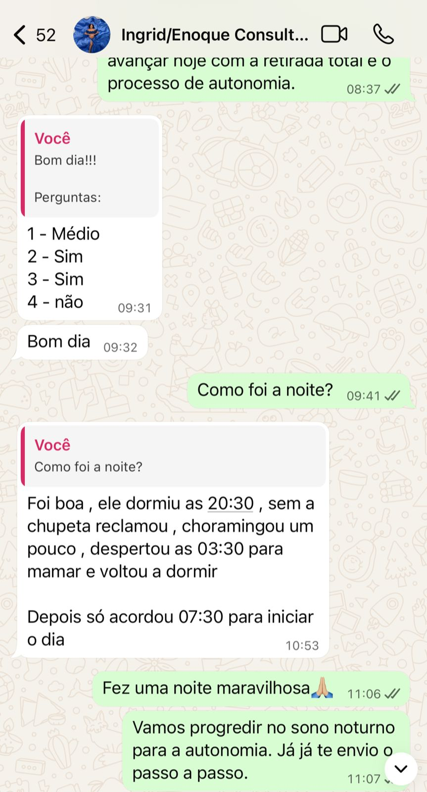
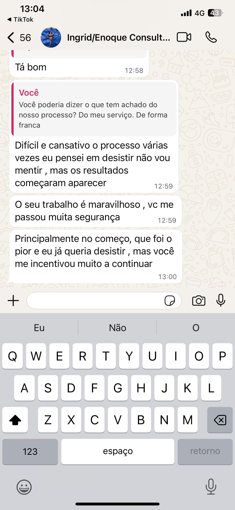
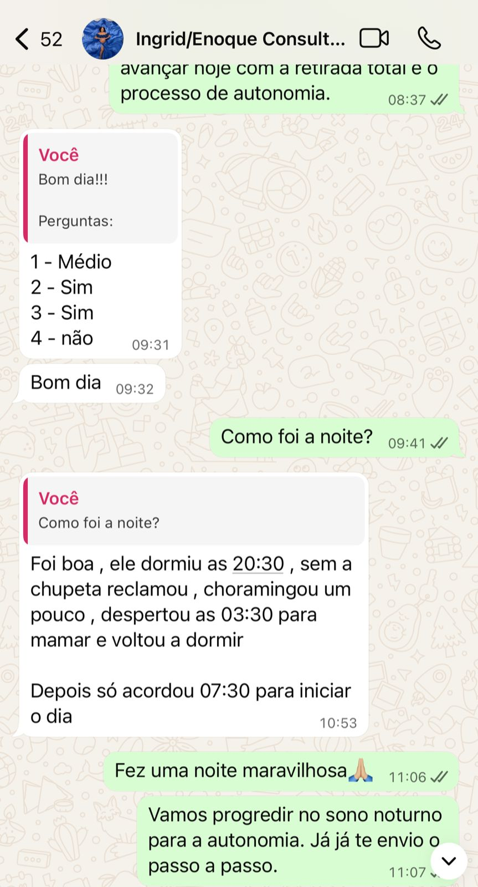
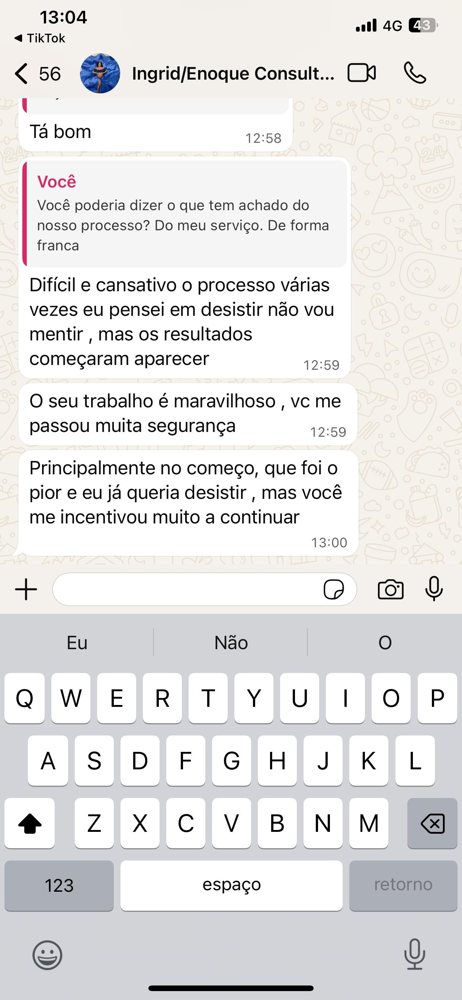
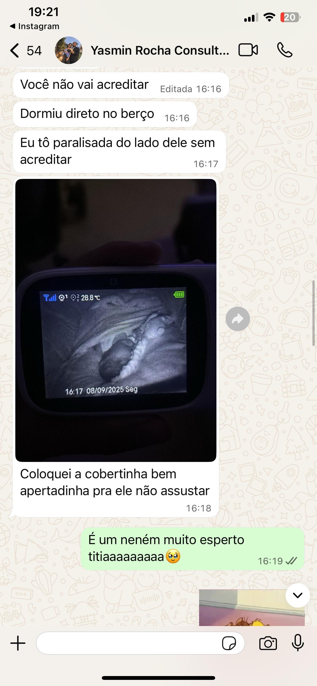
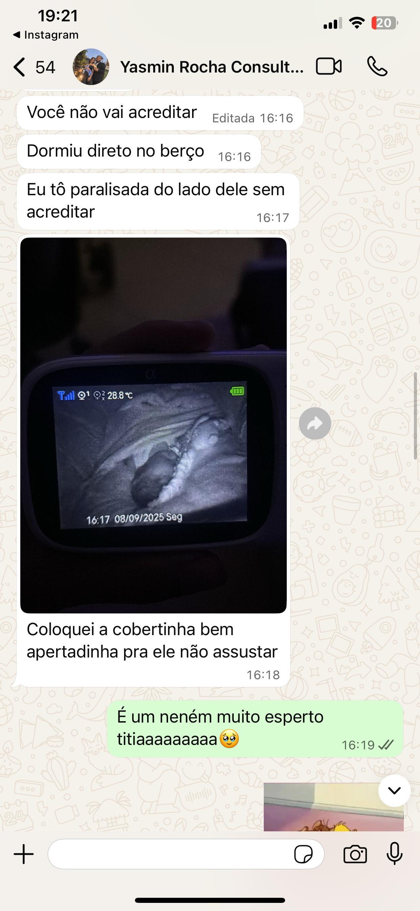
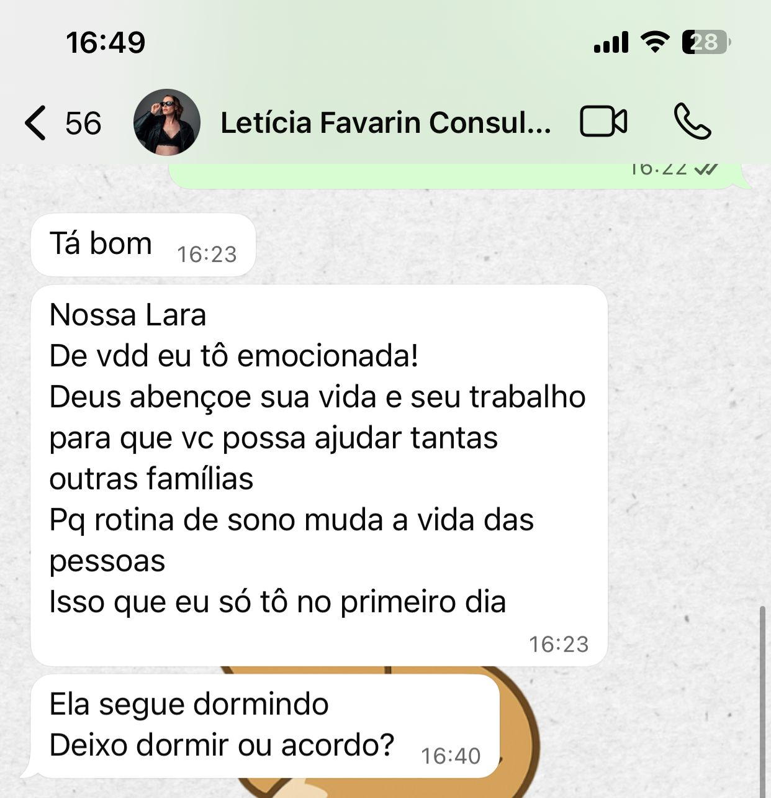
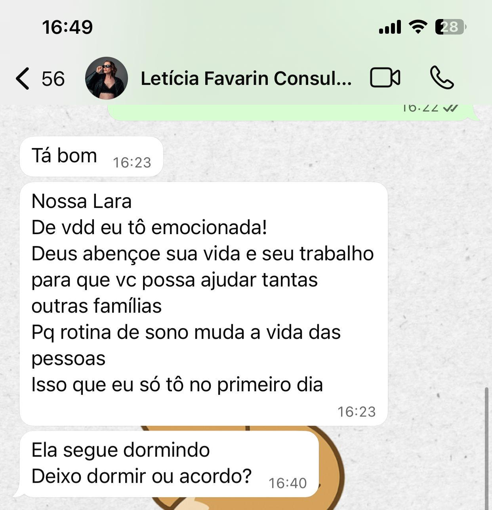

Dentro da minha consultoria, quero trabalhar não somente o sono, mas também os momentos de vigÃlia do bebê, oferecendo opções de estÃmulos que irão desenvolver o cognitivo, motor e a linguagem do seu bebê.
Você vai ter acesso a:
- Rotina completa desenvolvida a partir dos horários e da realidade da sua famÃlia
- Estratégias para retirada de associações
- Estratégias para autonomia do sono e diminuição (ou extinção) de despertares noturnos
- Suporte durante o perÃodo da consultoria de 7:00 Ã s 19:00
- Encontro online para alinhamento de estratégias e dúvidas
🎁 Bônus: Ebook com informações e atividades que proporcionam um desenvolvimento integral do bebê

 



 

 
